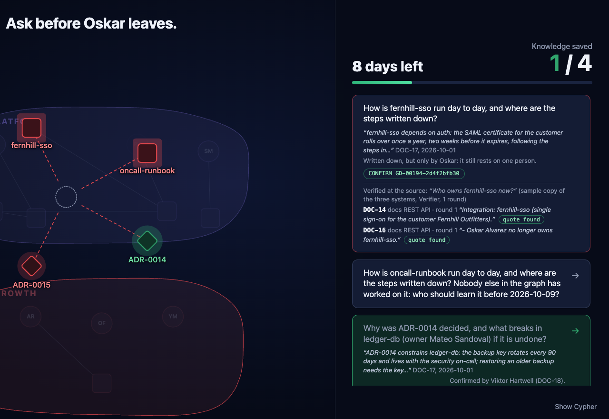
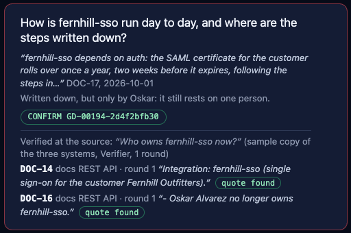

When someone leaves, their team lead has to find out who owns each system now, and why. The answer is spread over chat, tickets and documents that disagree and keep changing.
of 1,000 IT managers at large UK and US organizations worry about losing knowledge when people leave
say their organization has already lost knowledge that way
A team lead handing over a leaver's work, or the new owner of a system. They ask in plain words: "Who owns billing-api now?" "Who decided ADR-0014?"
Every cited claim comes with the record it rests on and the exact line, read again at its source before the answer is given.
If a message was edited after the agents read it, the answer says so and flags it for a person. In our test the edited message was caught in 5 of 5 live runs.
"fernhill-sso has no current owner. ... Nobody has been recorded as taking it over." Better to learn that before the last day than after.
What comes back: the answer, each citation with its verdict, the dropped ones with the reason, the number of rounds, whether it was stored, and a trace of every step.
Right: a real screenshot of the panel in sample mode, cropped.

1 2 3 4| Layer | What | Where in the repo |
|---|---|---|
| Data access | Zetaris 2.4.3.1, local, one SQL dialect over Postgres (JDBC), a CSV file and a REST API | zetaris_spike/, open_agent/sources.py |
| Agents and loop | Python 3.12, plain code, OpenAI-compatible client | open_agent/ |
| Models | NVIDIA Nemotron 3.5 Lightning 30B-A3B (Investigator), Nemotron 3 Nano 30B-A3B (Verifier) | docs/METERLESS.md |
| Model provider | Meterless Nightshift 1.2.1, headless, loopback only, signed receipts | open_agent/nightshift.py |
| Agent memory | Meterless H-MEM reference engine, pinned, Node sidecar | vendor/hmem/, open_agent/hmem_bridge.py |
| Graph, gate, tools | FalkorDB 6.0.2 (pre-existing core) | honest_memory/ |
| Run path | docker compose up --build · POST /run · sample mode on by default | serve.py, docker-compose.yml |
The same SQL and the same Verifier over a local copy of the three systems; no model, no keys, no network. Fresh clone with an empty .env: 5 input examples and 1 new question through POST /run, all 6 completed (3 verified, 1 absence confirmed, 2 no_claim: the sample router has no rule for that wording, a model answers it live).
Local Zetaris (with its own admin sign-in) and Nightshift on the same machine. Measured on one Mac Studio (Apple M5 Max, 128 GB): no separate graphics card, no cloud model API.
| Zetaris re-read by id | Verifier judgement (Nano) | Investigator tool step (Lightning) | Investigator cites (Lightning) | Investigator revises (Lightning) | Switching the loaded model |
|---|---|---|---|---|---|
| 0.20 s chat · 0.38 s docs | 2.5 s | 4.3 s | 11.9 s | 44.1 s | 5.5 s |
Before any answer counts, the Verifier goes back through Zetaris to the system that owns each cited record and reads the line again. That check is plain code, and no model can overrule it.
On 24 Oct, in a development run before we moved to Nightshift (Nemotron 3 Nano on a local Ollama), the Investigator's model quoted a chat sentence as if it were ADR-0009, and the Verifier's model said "supports". The quote check rejected it anyway, and the revision quoted the ADR's own line.
Only answers whose every quote is still in its source reach H-MEM, so the agents' memory does not learn from a misquoted answer.
msg-0148 edited in Postgres after the memory read it
5 of 5 runs: round 1 rejected msg-0148, round 2 verified, restored. Median 164.5 s per question: the models think on every call and only one of the two was loaded at a time on our shared Mac. The film shows a later run of the same example (367 s), with the waits between outputs shortened.
Answers from the files it was given. It has no step that reads each quoted line again in the live system before the answer counts.
Finds pages. The lead reads and reconciles them by hand; nothing reads a quoted line again at its source.
Every cited claim is re-read at its source before it counts, what could not be confirmed is listed, and only checked answers are stored.

The answer card, cropped from a real screenshot of the panel (sample mode). The card asks "How is fernhill-sso run day to day, and where are the steps written down?". Under the divider, the panel asked the agents "Who owns fernhill-sso now?" and shows the two records the Verifier re-read in the sample copy of their source system; this part was built in the hackathon window.
docs/deck-runs-2026-10-25/ trace-20261025T135528Z-6fd1.jsonl same question, sample mode (a local copy of the three systems), on the submitted code; abridged, from the trace 1 Run start "Who owns fernhill-sso now?" 5 Ingest graph_built 403 records, 3 systems 1.23 s 7 Investigator memory_recall H-MEM: nothing matched 8 Investigator tool_call current_owner fernhill-sso → DOC-14, DOC-16 10 Investigator draft round 1, 2 citations → Verifier 12 Verifier reread DOC-14 docs (sample copy) 13 Verifier check DOC-14 found=True accepted 14 Verifier reread DOC-16 docs (sample copy) 15 Verifier check DOC-16 found=True accepted 16 Verifier verdict round 1 accepted → write gate 18 Investigator write_gate accepted FND-00001, H-MEM mem-1 19 Run end 1.34 s verified Answer: "fernhill-sso has no current owner. Last owner: Oskar Alvarez until 2026-10-09 (closed by GD-00225-..., citing DOC-16). Nobody has been recorded as taking it over." No model in sample mode, so the model's judgement reads "skipped"; live runs add each model call with its signed Nightshift receipt id (slide 5, logs/).
Source edits were tested on chat records only. H-MEM recall matches shared words, and the absence check is case-sensitive. Answer quality is bounded by the model: the guarantee is about what gets stored, not that every question gets answered.